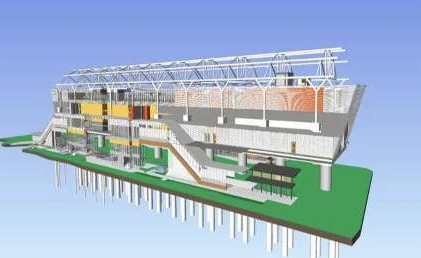

Concept geometry based on portfolio model views
Illustrative geometry and build sequence. Component counts and proportions are not quantity takeoffs.
Roshan Raj Portfolio, pages 6–10. This presentation explains the portfolio study. It does not represent a verified construction programme, delivered project, or measured progress.
Open the original portfolio PDF